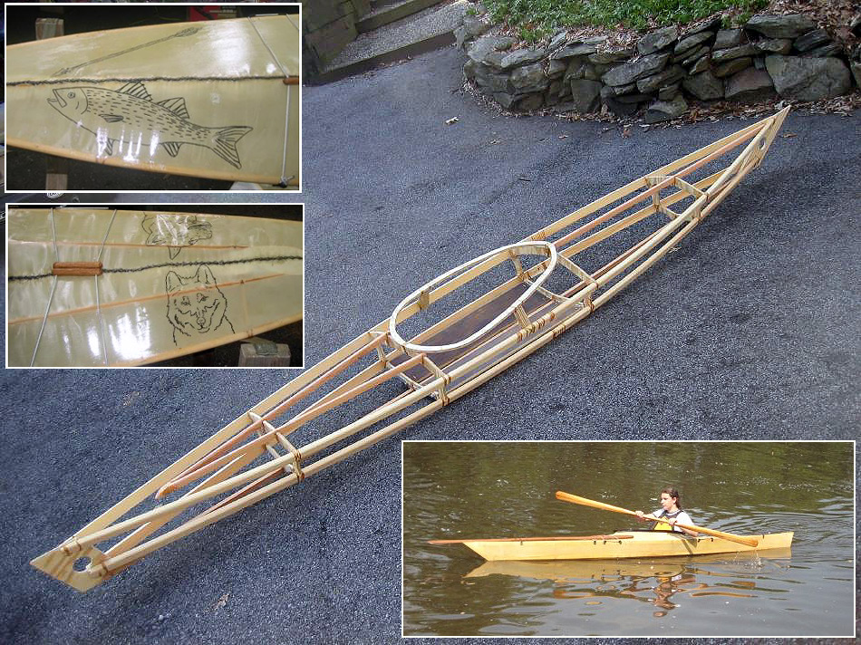

| Sea Tour 13 by John Van Buren (US) | Menu Previous Page Next Page |
|

John, from Staatsburgh, New York built a Sea Tour 13 for his grandson's. The skin is sewn nylon coated with Zar Polyurethane. John drew the deck graphics with a Sharpie pen coated with Zar.
|
|